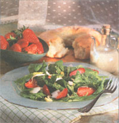

NATURAL KITCHEN
It's time to go berry picking and Anne Vassal describes six delicious ways to enjoy one of the best treats of the season.
There are a few poor souls on the planet who have never tasted a "real strawberry." I'm not referring to those chewy, pale-red impostors in the local grocery suffering from jetlag or a long truck ride originating in Southern California. I'm talking about a warm sunny day in late June. You're squatting down next to rows of crimson-red strawberries - sweet smelling and tender to the touch. Most of the picked berries make it into your basket, but once in a while you sneak an irresistibly sweet and juicy one to melt in your mouth as you continue your search for the ripest berries.
I never knew that "real strawberries" existed until we began to make our annual trip to Michigan just to pick them. Our son was a preschooler back then and loved to go strawberry picking. It was an easy job for a little person because the strawberries were almost at eye level. Also the strawberry plants were pricker free for easy picking, and he could consume all that he desired. The owner of the farm would tease that he was going to weigh our son also on the way out, charging accordingly.
Now, no matter where we're living, we always plant a small strawberry patch next to the garden. It's a shame that the strawberry season is just a few short weeks in the Midwest, but that's where strawberry jam, frozen strawberries, and lots of easy to prepare strawberry recipes come in.
Selecting Strawberries
Strawberries are the most plentiful of berries, so in season they're reasonably priced. Out of season they're sometimes affordable but are often underripe and tasteless. There are about 70 varieties of commercially grown strawberries. I prefer the smaller red berry because of the texture and sweetness, although new varieties are now bred to be larger without sacrificing flavor. In season, try to buy locally picked berries (ask your produce manager) or visit a farm stand. While the berries are at their best, buy in bulk for freezing or making jam. If you are buying in bulk at a farm stand or a u-pick farm, take along a cooler and a few freezer packs for the trip home. Berries are highly perishable and can become overripe or spoiled if kept at warm temperatures after picking. When shopping, look for ripe but not mushy berries; the caps on the top should look fresh and green. Check inside the carton for moldy or unripe berries since many times the beautiful ones are only on the top.
Preparation
Strawberries are high in fiber and contain more vitamin C than any other berry (or even oranges), but the vitamin C diminishes rapidly after they are cut.
Washing the berries will cause them to deteriorate, so rinse briefly with cold water just before serving.
When you bring home a carton of strawberries, empty them out and remove any very ripe berries for immediate consumption. Put the rest into a shallow container, cover with paper towels and refrigerate. They will survive better if they're not piled on one another. Ripe, locally picked berries are best when eaten within two days; other berries may last four to five days.
Freezing
Strawberries freeze well - lasting up to two years in a freezer. Remove the stems, but don't wash the berries. Lay them on a cookie sheet and freeze for an hour or two. Put frozen berries in freezer-zip-lock bags, label and date, then pop back into freezer. Some people prefer to slice them first before freezing, but then they need to be used within a few months. When using any frozen strawberries, they're best served partially defrosted.
Strawberry Shortcake
This low-fat shortcake replaces butter with yogurt, and because you don't need to roll it out, the dough is easy to prepare. You need to make the yogurt starter the night before, and drain the yogurt topping at least three hours before serving.
Starter1 cup Dannon low-fat vanilla yogurt
1 cup sifted unbleached white flour (white flour must be used on this part)
2 tablespoons sugar
1 1/2 cups sifted whole-wheat pastry flour
2 teaspoons baking powder
1/2 teaspoon baking soda
1 teaspoon cinnamon
dash salt
2 tablespoons real maple syrup
1/2 teaspoon vanilla extract
1/2 teaspoon cinnamon - mixed with
2 tablespoons sugar (I use turbinado sugar - the granules are larger)
In a medium-sized mixing bowl stir together the yogurt and flour. Sprinkle the sugar on top. Cover with plastic wrap and store in warm place (like on top of a gas stove) overnight or for 12 hours. The next day preheat the oven to 375°F and generously grease a cookie sheet. Stir together the dry ingredients up through and including the salt. Stir into the starter with the maple syrup and vanilla. Pour out onto wax paper and knead for a few minutes with floured hands (the dough will be sticky). Roll into balls and flatten slightly on the cookie sheet to form 2 1/2-in. circles. Sprinkle the tops with the cinnamon sugar. Bake about 15 minutes until lightly browned. Cool at least 10 minutes before slicing in half.
Topping1 – 1 1/2 cups Dannon low-fat vanilla yogurt
Place a non – terry-cloth dish towel or double-layer cheesecloth inside a colander. Spoon the yogurt onto the dishcloth and let drain for about three to four hours.
Serve immediately or refrigerate in a plastic container.
Shortly before serving prepare the strawberries: 1 quart strawberries - hulled and sliced1 tablespoon sugar
Stir and refrigerate.
Assembly: shortcake bottom, strawberries, shortcake top, strawberries, and drained yogurt on top. Yields 7-8 shortcakes.
Strawberry Spinach Salad 4 cups garden-grown baby-spinach leaves 1/2 cup daikon (white) radish (or any mild radish)-first halved and then cut into thin slices 1 cup fresh ripe strawberries - cored and halved 1/2 cup Asian mung bean sprouts 1 tablespoon sesame seeds
Ginger Vinaigrette
1/4 cup freshly squeezed lime juice
2 tablespoons ginger root - peeled and coarsely chopped
1 tablespoon sesame or canola oil
1 teaspoon champagne vinegar or white-wine vinegar
1 tablespoon honey
dash salt
dash cayenne
1/4 cup nonfat (or low fat) yogurt
Wash the spinach, drain, and roll up in a dish towel to dry. Toast the sesame seeds in a dry skillet on medium-high heat, shaking the pan for about 60 seconds. Set aside. Assemble the rest of the salad in a large bowl. In a blender, mix the dressing well. Strain the dressing if there are strands of ginger, then stir in yogurt. In a mixing bowl, whisk the yogurt dressing together. Toss with the salad and sprinkle with the sesame seeds. Serve immediately.
Strawberry Bread
This is a good recipe to use up overripe or mushy strawberries. Frozen strawberries can be used in this recipe if they're defrosted first.
2 eggs - or 1 egg and 2 egg whites
1/4 cup sugar
2 tablespoons real maple syrup or honey
1 teaspoon vanilla
1/3 cup mild oil - such as canola or sunflower (1/4 cup oil can be used if preferred)
2 teaspoons cinnamon
1 cup (8 oz) fresh, ripe strawberries - hulled and mashed well into a sauce
1 3/4 cups plus 1 tablespoon sifted whole-wheat pastry flour
1/2 teaspoon baking soda
1 1/2 teaspoons baking powder
2 tablespoons sliced almonds (optional)
Preheat oven to 350°F. Lightly grease the bottom of a loaf pan. Using an electric mixer, beat well all the ingredients up to and including the strawberries. Mix in briefly the flour, soda, and baking powder. Pour into the loaf pan and top with the sliced almonds. Bake for 40-50 minutes until an inserted toothpick comes out clean. Cool on a rack before removing from the pan.
Easy Strawberry Jam
Use only the sweetest and ripest locally grown strawberries for jam or you'll be disappointed. A minimum amount of sugar is used in this recipe, and no packed pectin is needed since the pectin in the apple helps to thicken the jam. This jam isn't as thick as store bought, but it's good to spoon over toast, yogurt, or ice cream.
2 cups strawberries
1/2 cup apple - seeded and chopped into small pieces
2 tablespoons frozen apple juice concentrate
1/3 cup sugar
1 tablespoon lemon juice
Wash the strawberries, core, slice, and cut away any unripe or overripe areas. Mash the strawberries well until the slices have disintegrated. Simmer the apple in the apple juice concentrate for about two minutes until mushy. Stir in the strawberries and sugar. Simmer for about 12-14 minutes, stirring often, until the liquid is reduced slightly and the jam has thickened. Remove from heat and stir in the lemon juice. Pour into two jelly jars and refrigerate. Will keep three to four weeks.
Strawberry Cooler
1 cup ripe strawberries - hulled and halved
1 cup bottled sparkling water
1 tablespoon freshly squeezed lime juice
2-3 teaspoons sugar
3-4 ice cubes
fresh sprig mint (optional)
Blend well in blender. Add sugar to taste. Serve in a tall glass with a whole strawberry and a sprig of mint.
|
JUDD PILOSSOF; FOOD STYLING BY MARIANN SAUVION Assistant Editor Christine Cauchon dives into a strawberry shortcake. |
JUDD PILOSSOF; FOOD STYLING BY MARIANN SAUVION |
 |